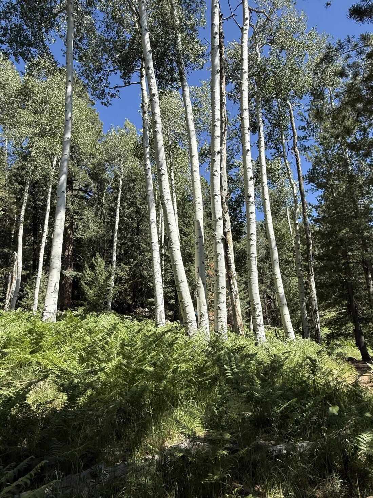
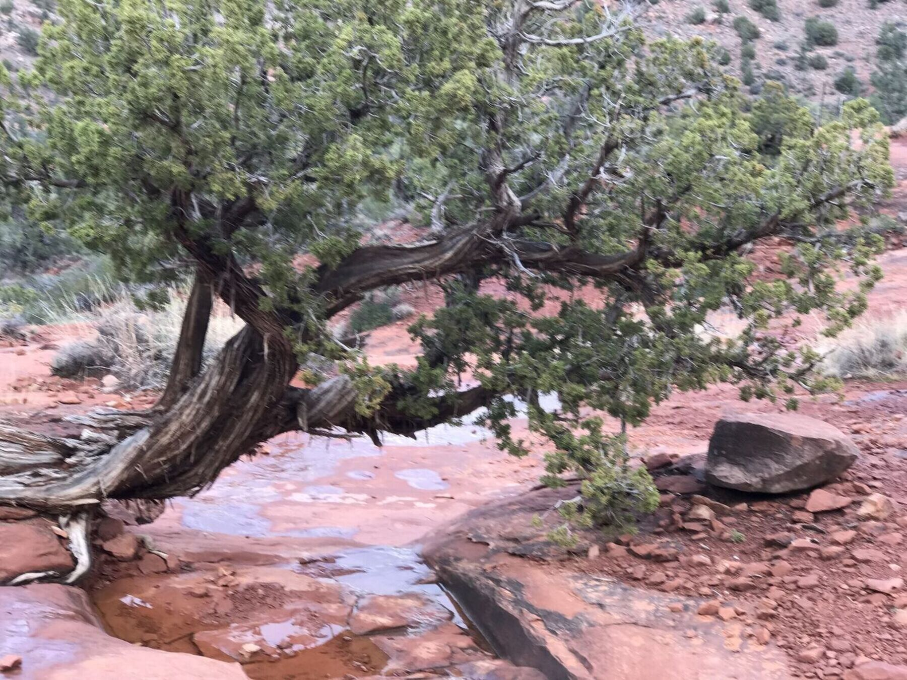

We are the far messengers now.
The heat, the waves and the storms are already here. Every people on earth once raised far messengers: trained carriers who crossed deadly ground, calm, and delivered what mattered whole. The most proven way through is already in our own history.
Where are you carrying it?
On the fourth day, the well was dry.
A frightened man, in that moment, does the one thing that ends his crossing. The fear says run. And out there, the fear is always wrong.
So he did the hard thing. The trained thing. He sat down. He softened his eyes to the whole horizon, and he counted his breath.
And when his heart came down, his quiet mind remembered a seep his grandfather had told him about once: half a day back, and to the north, running only in the years the great rains failed everywhere else.
The calm did not make him comfortable. The calm made him remember.
You do not make the calm. You retrieve it. You store it in your bones in the quiet days.
We kept the cargo. We lost the carry.
The far messengers were the trained carriers every people on earth once raised: the ones who crossed deadly distance with what the people needed, and delivered it whole. Their disciplines of breath, body, state and service are the oldest tested system for crossing hard ground.
Every people on earth raised them. Every one of us has them in our line.
Not a hero. A person who was carried, who is now carrying, for people they will not meet.
Not just the messengers. The pattern that makes them.
He stands at the very top of a whole civilization built around the raising of skilled and honored people. In the old peoples, every family aspired to raise someone to a role. Not to wealth — to a place in the pattern.
The one who watched the weather and read the clouds across years. The one who knew every leaf and root. The seed-keeper. The one who read the water. The healer. The one who settled disputes before they broke a people apart. The one who kept the count of the years. The song-holder, who carried a whole library in memory.
Your rising was not a threat. Your rising was your family's glory and your whole people's gain.
We are not learning the old ways out of reverence. We are learning them because our children will not get across what is coming without them.
What a far messenger looks like now
One idea, five shapes. Each one seen in the same four moments.
Whole, where others can see it.
- The day begins
- She runs before light and sings what her grandmother sang.
- When it goes wrong
- She does not rescue anybody. She stands there being whole where a broken person can see it.
- Money and success
- She coaches champions, and holds rank without ever wearing it.
- What is handed on
- One young person, taught all the way through: the stride and the song.
The one who does not startle.
- The day begins
- A stone closed in his fist before first light. He runs, comes home, and does it again the next morning, and never once calls it a practice.
- When it goes wrong
- Very angry, he finishes his sentence and walks out at the normal speed. Both are true. The second one is the discipline.
- Money and success
- He has everything the world measures and is still learning to sit down. Every month he does work nobody will ever see.
- What is handed on
- One thing to the circle every day. One person taught all the way through.
A straight house, a watched child.
- The day begins
- Outside, before first light, before the noise.
- When it goes wrong
- You cannot think straight in a crooked house. They straighten the house first.
- Money and success
- One real circle or kin call each week, and the finest piece brought out whenever the people gather.
- What is handed on
- The elders watch each child for years, the way you would watch weather, and turn them toward what they have in them. A child reading out loud to a grandmother in the kitchen is the transmission.
No one carries alone.
- The day begins
- With the gathering. The fire and the celebration are not a frill. They are the load-bearing structure of trust.
- When it goes wrong
- The distance is split into short legs, with all the care in the hand-off, so no single loss can break the chain.
- Money and success
- No one takes more than they need, because everyone would see. Wealth grows four ways at once: money, trust, culture and the living land.
- What is handed on
- Leaders are recognized, not campaigned for. Decisions are woven until they hold everyone’s best thinking, not voted to a winning half.
A mission it cannot sell.
- The day begins
- Meetings start settled, in rooms where people can think.
- When it goes wrong
- At hour eleven of a crisis it reads the weather, not the insult, and asks whether the canoe has turned or the sea has.
- Money and success
- It grows all four capitals and never one at the cost of the other three. The money from the ones who have it buys time for the ones who don’t.
- What is handed on
- Chartered so it cannot be sold, its mission locked in its bones. Every major decision faces one question: will this make the great-grandchildren whole, or hollow them out?
Eight weeks. The way they actually trained.
One training a week, in the order every tradition used. "Regulate the operator before you read anything." Then find what holds, store it, check it, share the load, bring it home, and tie it to something that returns.
- 1
The runner's protocol.
Settle the carrier first: the record of hard things you came through, the stone, the ankle on the climb, the whole horizon when it gets bad. With Tonas. The high desert.
- 2
Build one house.
Steer by the house, not the star that climbs out of reach. With Nalu. The Pacific.
- 3
Find the ridge under your weather.
What the storm took, and what stayed true underneath it. With Satoshi. The Sahara.
- 4
Build one songline.
Put what you must carry into a road your feet already know. With Chariya. Australia, the structure the custodians made public.
- 5
Map your acoustic horizon.
Stop tracking the noise. Start mapping the holes. With Aoi. Borneo.
- 6
The hand-off.
Nobody carries the whole way. The written specifics and the spoken meaning, said back. With Illary. The Andes.
- 7
Carry one thing across.
Record the one who holds it, make two copies, use it once out loud. With Austėja. The Baltic.
- 8
Say the names out loud.
Make the year ask: tie it to something that already returns. With Kiprono. Mindanao.
We are the far messengers now.
It did not make you weak. It made you unable.
There is a way back, and it begins in the body.
What are you carrying right now?
Before any tool, settle the body.
Your path begins with this tool. Then the seven disciplines, one a week, with a guided voice and a circle doing the same work.
Begin the pathBuilt on five traditions and sourced science. Where the record is thin, we say so.
For your work
Six readings for a leadership team or a board. Each one holds a passage, the principle, questions for the room, and one practice for the quarter.
Nothing sacred is in them. Only what works and belongs to no one.
1GoalsThe house, not the star
Markets, products and roles are stars: low and useful for a while, then they climb out of reach. The house is what the company is actually for, and the work is to know which house you were steering by. A thing is wealthy only if it grows four kinds of capital at once: financial, relational, cultural and ecological. A venture that grows the first by shrinking the other three is not a success. It is a thief.
- What is our house, in one phrase?
- Which of the four capitals did we grow this year, and which did we spend?
2StructureThe relay
Nobody carries the whole way. Keep the legs short and put the engineering into the hand-off: the written specifics and the spoken meaning, said back before the runner lets go. Whoever runs the whole distance alone is a single point of failure wearing the costume of strength.
- If one person went down tonight, what would be lost?
- Which hand-off here is never said back?
3MeetingsA room where people can think
An agitated instrument has a noise floor above the signal, and a frightened room cannot think. Settle the room before anything is decided. Every report carries two channels: the numbers, and what they mean. Before anyone leaves, the decision is said back.
- What state is this room in before we decide?
- Can each of us say the decision back in one sentence?
4Governance and the boardThe One Question
Ask it of every dollar, every deal, every machine, every meeting: will this make the great-grandchildren whole, or will it hollow them out? Leaders recognized, not campaigned for. Decisions woven in the circle until they hold the best thinking of everyone, not voted to a winning half. A mission chartered so it cannot be sold.
- Which item on our agenda fails the One Question?
- Who are we raising to lead after us?
5A mindset of abundanceFullness is equipment
Wanting is not a feeling. It’s a heart rate. Walk into a room needing something from it, and the room feels it and moves away. The far messengers carried fullness, not fear, because a mind rehearsing lack misreads the ground it is crossing. The highest good traded is knowledge, shared freely.
- Where are we deciding from scarcity?
- What is already given that we have stopped counting?
6A mindset of disciplineCalm is stored, not summoned
Composure is a reserve, built on quiet days and spent on hard ones. Turn toward trouble, slowly. Read the weather, not the insult. Very angry, and walking out at the normal speed: both can be true, and the second one is the discipline.
- What do we practice on the days nothing is wrong?
- What is the weather doing, and how is it read?

The far messenger’s day
Live it imperfectly and daily rather than perfectly and never.
- First light
- Rise before the noise. Set the frequency before the day sets it for you. Name what is already given until the body believes it.
- Through the day
- Soften the eye when friction rises. Refuse overburden; hand one thing to the circle. One act of honor, daily.
- Evening
- Three lines: what I carried, what I learned, whom I honored. Release the day’s scarcity moment. Say it the other way.
- The week
- One real circle or kin call. Hands on a craft. Hours on the land, no screen. One hour of deliberate nothing.
Becoming a far messenger
The tools are a tenth of it. The rest is the container: coming back, week after week; a real task; someone allowed to tell you the truth about yourself; and the obligation to hand it on.
Begin the path See the eight weeksThe Path, the Circle and the Council: see how to join.
- The eight weeksOne training a week, the way the far messengers actually trained, each with its guide and a guided voice.
- The meditationsAbundance ancestral meditations, guided, with new ones every week.
- The dayFirst light, through the day, evening and the week, held as a practice.
- The readingsFor your work: goals, structure, meetings, governance, abundance and discipline.
- The circleA monthly circle, and small coaching circles with a far messenger.

You cannot hand anything to a person whose body is running.